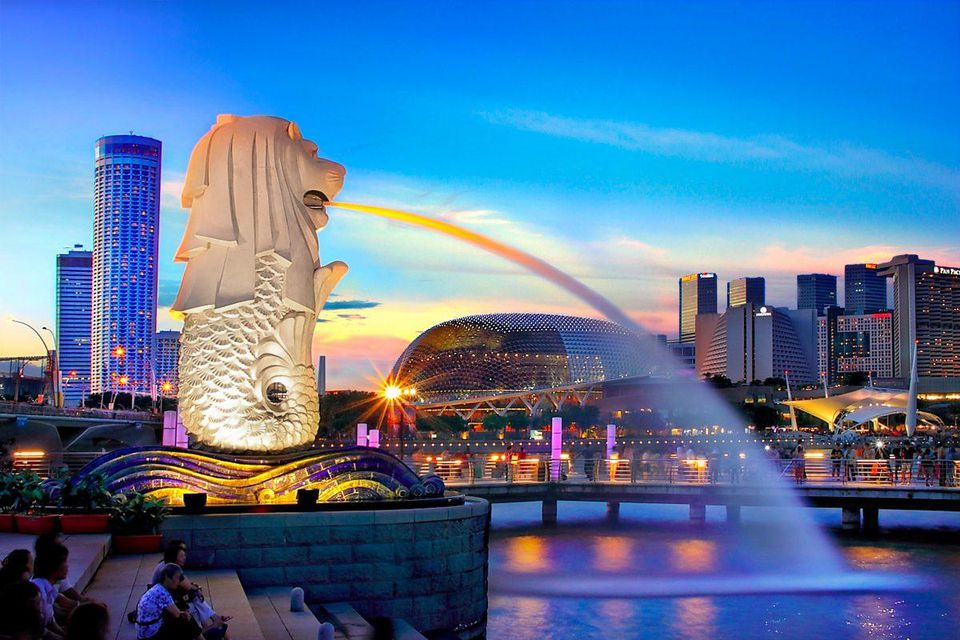

"NARUTO CLANS"
SYNOPSIS:
The Uchiha Clan is one of the oldest and strongest clans ever and is directly descended from the Elder Son. The special dojutsu of the clan, the Sharingan, is one of the most feared in the world.
UCHIHA
MEMBERS OF THE CLAN:

SYNOPSIS:
The Ōtsutsuki clan is an ancient clan of horned celestial beings.After the arrival of one of the clan members on Earth a millennium ago, the Ōtsutsuki began having a lasting influence on the human population, notably starting the history of shinobi.
OTSUTSUKI
MEMBERS OF THE CLAN:
SYNOPSIS:
The Senju clan was one of the clans responsible for founding the first shinobi village: Konohagakure. Although the clan itself no longer appears to exist as a group, the Senju continue to influence Konoha's politics through their philosophy of the Will of Fire.
SENJU
MEMBERS OF THE CLAN:
SYNOPSIS:
The Hyūga Clan (日向一族, Hyūga Ichizoku) is one of the four noble clans of Konohagakure. Members of the Hyūga clan are descendants from the Ōtsutsuki clan.
HYUGA
MEMBERS OF THE CLAN:
SYNOPSIS:
The Uzumaki clan (うずまき一族, Uzumaki Ichizoku) was a prominent clan in Uzushiogakure. They were distant blood relatives of the Senju clan.
UZUMAKI
MEMBERS OF THE CLAN:


SYNOPSIS:
The Sarutobi Clan (猿飛一族, Sarutobi Ichizoku) is an influential clan from Konohagakure. It has produced several renowned members who have held positions of high authority, including the Third Hokage.
SARUTOBI
MEMBERS OF THE CLAN: